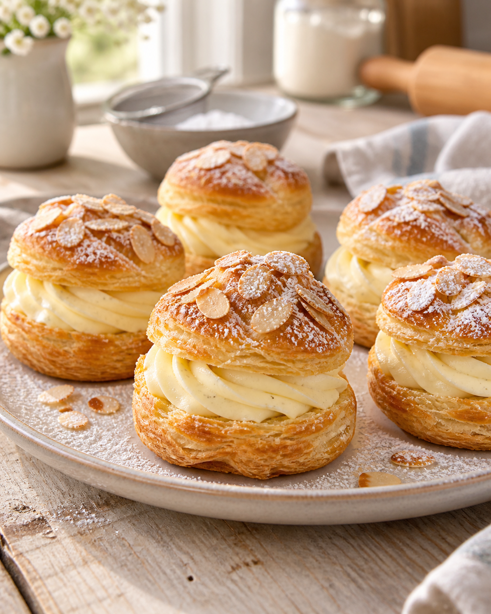

Was Süßes aus dem Ofen
Blätterteig-Küchlein mit Vanillecreme

Zutaten
Für die Küchlein
2 RollenBlätterteig aus dem Kühlregal
1Eigelb
Nach BedarfMandelblättchen
Für die Creme
300 mlKalte Milch
1 Pck.Paradiescreme Vanille
250 gMascarpone
100 mlKalte Schlagsahne
1 Pck.Sahnesteif
1 Pck.Vanillezucker
Außerdem
Nach BedarfPuderzucker zum Bestäuben
Zubereitung
- Den Backofen auf 200 °C Ober-/Unterhitze vorheizen. Den Blätterteig ausrollen, jeweils einmal zusammenklappen und leicht andrücken. Insgesamt zwölf Kreise ausstechen und mit etwas Abstand auf ein mit Backpapier belegtes Blech legen.
- Das Eigelb verquirlen und die Teigkreise dünn damit bestreichen. Mit Mandelblättchen bestreuen und etwa 15 Minuten goldbraun backen. Anschließend vollständig auskühlen lassen.
- Die kalte Milch mit der Paradiescreme etwa 3 Minuten zu einer glatten Creme aufschlagen.
- Mascarpone, kalte Sahne, Sahnesteif und Vanillezucker in einer zweiten Schüssel zu einer festen Creme aufschlagen. Die Vanillecreme nur kurz unterrühren, damit die Füllung stabil bleibt. In einen Spritzbeutel geben und kurz kalt stellen.
- Die ausgekühlten Blätterteig-Küchlein vorsichtig waagerecht halbieren. Die Deckel mit Puderzucker bestäuben.
- Die Vanille-Mascarpone-Creme auf die Unterseiten spritzen und die Deckel vorsichtig aufsetzen. Bis zum Servieren kalt stellen.